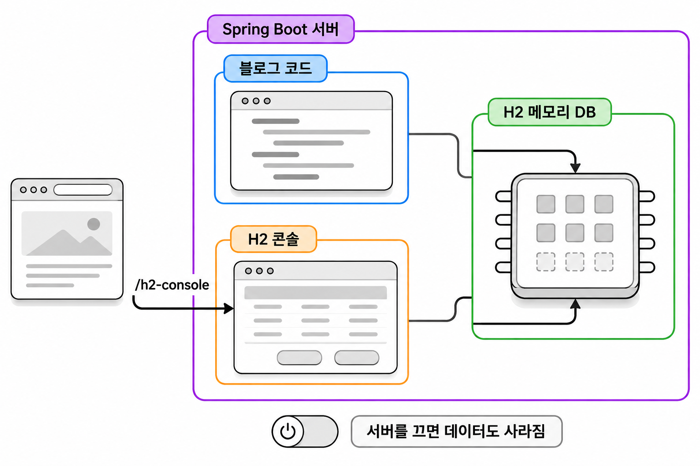
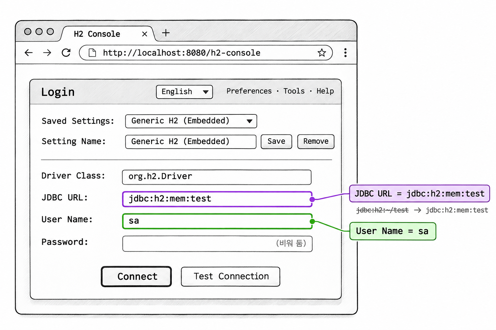
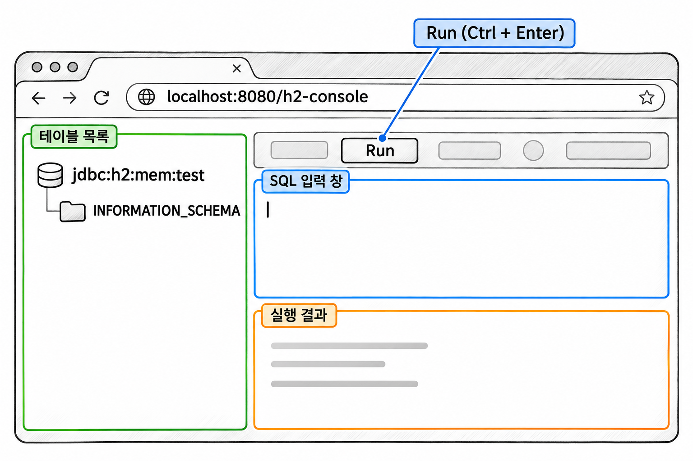
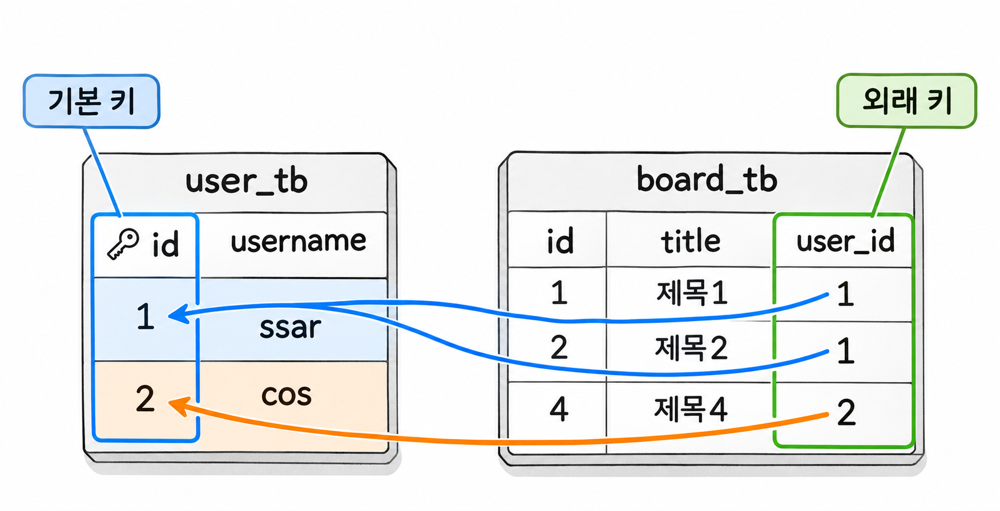
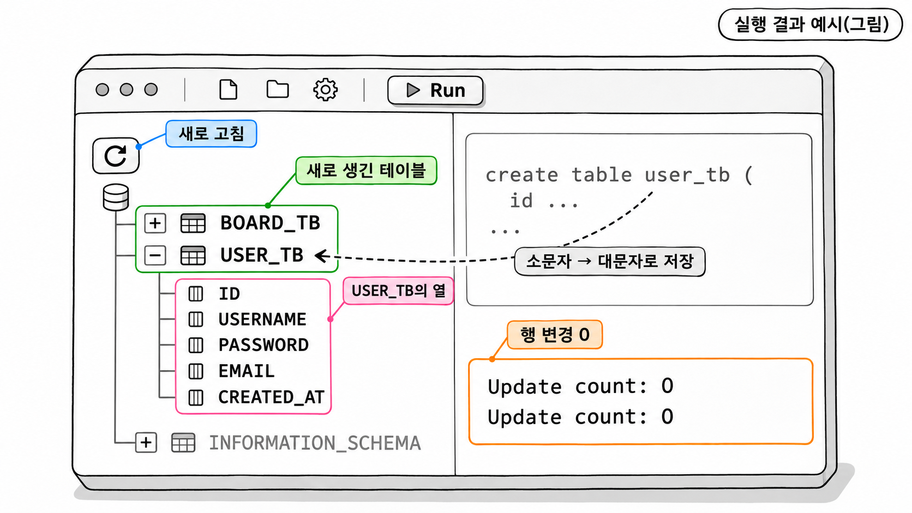
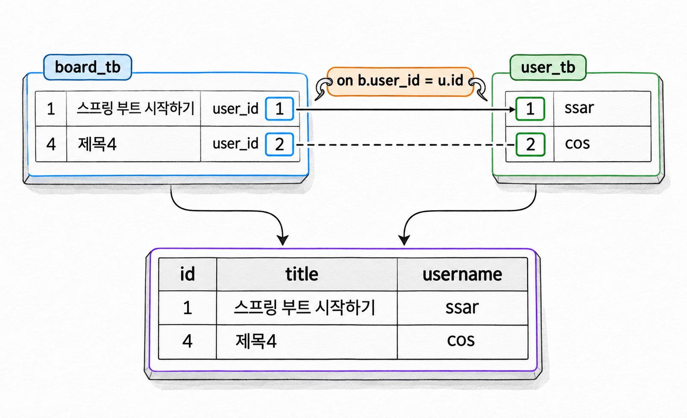

4장. 데이터베이스와 SQL이란?
1. H2 데이터베이스 연결
1.1 H2 메모리 DB
블로그 API는 회원과 글을 저장해 두었다가 요청이 오면 꺼내 줍니다. 서버를 다시 켜도 남아 있어야 하는 데이터를 체계적으로 모아 두는 저장소가 데이터베이스(database, DB)입니다. 데이터베이스에 데이터를 넣고 꺼내려면 SQL(Structured Query Language)이라는 언어로 명령을 보냅니다.
이 책에서 쓰는 데이터베이스는 H2입니다. H2는 자바로 만든 가벼운 데이터베이스입니다. 라이브러리 하나만 추가하면 바로 쓸 수 있고, 따로 설치할 필요가 없습니다. 데이터를 디스크가 아닌 메모리에만 두는 메모리 DB(in-memory database) 방식으로도 쓸 수 있는데, 이 책은 이 방식을 씁니다.
메모리 DB는 Spring Boot 서버와 같은 프로그램 안에서 실행됩니다. 그래서 서버를 끄면 테이블과 데이터가 모두 사라집니다. 서버를 켤 때마다 빈 상태에서 시작하므로, 실습하다 데이터가 꼬여도 서버만 다시 켜면 처음 상태로 돌아갑니다.

실제 서비스에서는 MySQL이나 PostgreSQL 같은 별도 데이터베이스 서버를 두고 데이터를 디스크에 저장합니다. 이 책에서 배우는 SQL과 JPA 코드는 그런 데이터베이스에서도 거의 그대로 동작합니다. 운영용 데이터베이스(RDS)로 바꾸는 일은 후속 과정에서 다룹니다. 그 준비로 21장과 22장에서 설정을 나누는 방법을 배웁니다.
1.2 데이터소스 설정
자바 프로그램은 JDBC(Java Database Connectivity)라는 표준 방식으로 데이터베이스에 접속합니다. JDBC가 정한 약속을 실제로 구현한 것이 JDBC 드라이버(driver)이며, 데이터베이스마다 따로 있습니다. H2 라이브러리에는 H2용 드라이버가 들어 있습니다.
데이터베이스에 접속하려면 접속 주소(URL), 사용자 이름, 비밀번호가 필요합니다. 이 접속 정보로 데이터베이스 연결을 만들어 필요한 코드에 나눠 주는 객체가 데이터소스(DataSource)입니다. Spring Boot는 application.properties에서 spring.datasource.로 시작하는 설정을 읽어 데이터소스를 빈으로 자동 등록합니다.
요청이 올 때마다 연결을 새로 만들면 느립니다. 그래서 Spring Boot는 연결을 몇 개 미리 만들어 두고 돌려 쓰는 커넥션 풀(connection pool)을 씁니다. 기본 커넥션 풀 라이브러리는 HikariCP이며, 데이터베이스 관련 스타터를 추가하면 함께 들어옵니다.
2장에서 빈과 DI를 익히려고 만든 연습용 코드는 블로그 API와 관계가 없으니 여기서 정리합니다. GreetingMaker, OutsideMaker, PracticeConfig, WelcomePrinter 클래스를 지우고, application.properties에 넣었던 연습용 설정 키도 지웁니다. 그래서 예제 4-1은 1장의 예제 1-1에 이어서 씁니다.
예제 4-1 — H2 메모리 DB 연결하기
이어서: 예제 1-1
파일명: build.gradle
plugins {
id 'java'
id 'org.springframework.boot' version '4.1.3'
id 'io.spring.dependency-management' version '1.1.7'
}
group = 'com.newtenco'
version = '0.0.1-SNAPSHOT'
java {
toolchain {
languageVersion = JavaLanguageVersion.of(21)
}
}
repositories {
mavenCentral()
}
dependencies {
implementation 'org.springframework.boot:spring-boot-h2console'
implementation 'org.springframework.boot:spring-boot-starter-data-jpa'
implementation 'org.springframework.boot:spring-boot-starter-webmvc'
compileOnly 'org.projectlombok:lombok'
developmentOnly 'org.springframework.boot:spring-boot-devtools'
runtimeOnly 'com.h2database:h2'
annotationProcessor 'org.projectlombok:lombok'
// 테스트 (src/test 폴더에서만 사용)
testImplementation 'org.springframework.boot:spring-boot-starter-data-jpa-test'
testImplementation 'org.springframework.boot:spring-boot-starter-webmvc-test'
testRuntimeOnly 'org.junit.platform:junit-platform-launcher'
}
tasks.named('test') {
useJUnitPlatform() // 테스트를 JUnit 5로 실행
}파일명: src/main/resources/application.properties
server.port=8080
spring.servlet.encoding.charset=UTF-8
spring.servlet.encoding.force=true
spring.datasource.driver-class-name=org.h2.Driver
spring.datasource.url=jdbc:h2:mem:test
spring.datasource.username=sa
spring.datasource.password=
spring.h2.console.enabled=true실행 결과
build.gradle을 바꿨으므로 IntelliJ IDEA에서 Load Gradle Changes를 누릅니다. 실행 중인 서버를 Ctrl + C로 끄고 .\gradlew.bat bootRun으로 다시 실행하면 로그에 다음 줄들이 새로 나타납니다.
HikariPool-1 - Starting...
HikariPool-1 - Added connection conn0: url=jdbc:h2:mem:test user=SA
HikariPool-1 - Start completed.
H2 console available at '/h2-console'. Database available at 'jdbc:h2:mem:test'
spring.jpa.open-in-view is enabled by default. Therefore, database queries may be performed during view rendering. Explicitly configure spring.jpa.open-in-view to disable this warning새로 넣은 의존성은 세 개입니다.
| 의존성 | 구성 | 하는 일 |
|---|---|---|
spring-boot-starter-data-jpa | implementation | 5장부터 쓸 JPA 묶음. JDBC와 HikariCP도 함께 들어옴 |
com.h2database:h2 | runtimeOnly | H2 데이터베이스와 JDBC 드라이버 |
spring-boot-h2console | implementation | H2 내용을 브라우저에서 보는 H2 콘솔 |
H2는 실행할 때만 필요하고, 코드에서 H2 클래스를 직접 쓰지 않습니다. 그래서 runtimeOnly로 넣었습니다. Spring Boot 4부터는 H2 콘솔이 별도 모듈로 나뉘었습니다. h2 의존성만으로는 콘솔이 열리지 않으므로 spring-boot-h2console을 따로 넣어야 합니다.
추가한 설정의 뜻은 다음과 같습니다.
| 설정 | 뜻 |
|---|---|
spring.datasource.driver-class-name | 접속에 쓸 JDBC 드라이버 클래스 |
spring.datasource.url | 접속 주소. jdbc:h2:mem:test는 test라는 이름의 H2 메모리 DB |
spring.datasource.username | 접속 계정 이름 |
spring.datasource.password | 접속 비밀번호. 실습용이라 비워 둠 |
spring.h2.console.enabled | H2 콘솔 켜기 |
접속 주소를 적지 않아도 Spring Boot는 메모리 DB를 하나 만들어 줍니다. 다만 이때는 DB 이름을 임의로 지으므로, H2 콘솔에 어떤 주소로 들어가야 할지 알기 어렵습니다. 그래서 주소를 jdbc:h2:mem:test로 직접 정했습니다.
로그의 conn0: url=jdbc:h2:mem:test는 설정한 주소로 첫 연결이 만들어졌다는 뜻입니다. 그다음 줄은 H2 콘솔이 /h2-console 주소로 열렸다고 알려 줍니다. 마지막 줄의 open-in-view 경고는 JPA 스타터를 넣으면 나타납니다. 이 설정의 뜻과 끄는 방법은 5장에서 다룹니다.
1.3 H2 콘솔 열어 보기
H2 콘솔(H2 console)은 H2 데이터베이스에 SQL을 보내고 결과를 표로 보여 주는 웹 화면입니다. 메모리 DB는 서버 안에만 있어서 다른 프로그램으로는 접속하기 어렵습니다. 그래서 서버가 함께 띄워 주는 H2 콘솔로 들여다봅니다.
서버를 실행한 상태에서 브라우저로 http://localhost:8080/h2-console에 접속하면 로그인 화면이 나옵니다. 칸을 다음과 같이 채우고 Connect를 누릅니다.
| 칸 | 값 |
|---|---|
| Driver Class | org.h2.Driver |
| JDBC URL | jdbc:h2:mem:test |
| User Name | sa |
| Password | (비워 둠) |
JDBC URL 칸에는 처음에 jdbc:h2:~/test가 들어 있습니다. 이 주소는 사용자 폴더에 파일로 저장하는 다른 데이터베이스를 가리킵니다. 반드시 application.properties의 주소와 똑같이 jdbc:h2:mem:test로 고쳐야 합니다. 주소를 고치지 않고 Connect를 누르면 보통 Database "..." not found, either pre-create it or allow remote database creation 오류가 나고 접속되지 않습니다. 서버가 띄운 H2 콘솔은 없는 데이터베이스를 새로 만들지 않기 때문입니다.

생성형 예시 · 실제 실행 안 함
접속하면 화면은 세 부분으로 나뉩니다. 왼쪽 목록에는 데이터베이스 안의 테이블이 보입니다. 오른쪽 위 입력 창에 SQL을 쓰고 Run 버튼(또는 Ctrl + Enter)을 누르면 오른쪽 아래에 실행 결과가 나타납니다.
지금은 왼쪽 목록에 INFORMATION_SCHEMA만 보입니다. INFORMATION_SCHEMA는 H2가 스스로 관리하는 정보 모음이고, 우리가 만든 테이블은 아직 없습니다. 2절에서 SQL로 테이블을 만들면 이 목록에 나타납니다.

생성형 예시 · 실제 실행 안 함
서버를 다시 시작하면 메모리 DB가 새로 만들어지므로 콘솔에도 다시 접속해야 합니다. 9장에서 Spring Security를 추가하면 H2 콘솔이 막히는데, 그때 콘솔을 다시 여는 설정을 넣습니다.
2. SQL 기초
2.1 테이블과 기본 키 · 외래 키
H2처럼 데이터를 표 모양으로 저장하는 데이터베이스를 관계형 데이터베이스(relational database)라고 합니다. 데이터를 담는 표 하나가 테이블(table)입니다. 테이블의 세로 칸 하나를 열(column), 가로 줄 하나를 행(row)이라고 합니다. 회원 테이블이라면 아이디 · 비밀번호 · 이메일이 열이고, 회원 한 명이 행 하나입니다.
블로그 API에는 회원을 담는 user_tb와 글을 담는 board_tb가 필요합니다. 이름 끝에 _tb를 붙인 까닭은 user가 H2를 비롯한 여러 데이터베이스에서 예약어이기 때문입니다. 예약어는 테이블 이름으로 그대로 쓰기 어렵습니다. 두 테이블에 다음과 같은 데이터가 들어간다고 생각해 봅니다. 두 표 모두 일부 열만 보였고, board_tb는 일부 행만 골라 보였습니다.
user_tb
| id | username | password | |
|---|---|---|---|
| 1 | ssar | 1234 | ssar@metacoding.com |
| 2 | cos | 1234 | cos@metacoding.com |
board_tb
| id | title | content | user_id |
|---|---|---|---|
| 1 | 제목1 | 내용1 | 1 |
| 2 | 제목2 | 내용2 | 1 |
| 4 | 제목4 | 내용4 | 2 |
기본 키(primary key)는 테이블에서 행을 정확히 하나만 가리키는 열입니다. 두 테이블의 id가 기본 키입니다. 기본 키는 비어 있을 수 없고, 같은 값이 두 번 나올 수도 없습니다. 그래서 "1번 글"이라고 하면 어떤 행인지 하나로 정해집니다. 3장에서 본 /boards/1 같은 주소의 1도 이 기본 키 값입니다.
외래 키(foreign key)는 다른 테이블의 기본 키 값을 담아 두 테이블을 잇는 열입니다. board_tb의 user_id가 외래 키이고, 글을 쓴 회원의 id를 담습니다. 1번 글의 user_id가 1이면 작성자는 user_tb의 1번 회원인 ssar입니다. 글 테이블에는 작성자 이름을 통째로 적지 않고 번호만 적습니다. 덕분에 회원 정보가 바뀌어도 user_tb 한 곳만 고치면 됩니다.

데이터베이스는 외래 키에 규칙도 겁니다. user_tb에 없는 99번 회원을 user_id에 넣을 수 없고, 글이 남아 있는 회원은 지울 수 없습니다. 작성자가 없는 글이 생기지 않게 데이터베이스가 직접 막아 주는 것입니다. 이 가운데 글이 남은 회원을 지울 수 없는 경우는 2.3의 예제 4-5에서 직접 확인합니다.
2.2 CREATE TABLE
테이블은 create table 문으로 만듭니다. 괄호 안에 열을 하나씩 적는데, 열마다 이름과 자료형(data type)을 쓰고 필요하면 제약 조건(constraint)을 붙입니다. 제약 조건은 열에 들어갈 수 있는 값을 제한하는 규칙입니다. SQL 명령어와 따옴표 없는 테이블 · 열 이름은 대소문자를 가리지 않으며, 이 책은 소문자로 씁니다. 다만 작은따옴표로 감싼 문자열 값은 H2에서 대소문자를 가리므로, where나 like로 비교할 때 대문자와 소문자를 다른 글자로 봅니다.
기본 문법
create table 테이블명 (
열이름 자료형 제약조건,
열이름 자료형 제약조건,
primary key (기본키열),
constraint 제약이름 foreign key (외래키열) references 대상테이블 (대상열)
);이 장에서 쓰는 자료형, 제약 조건, 자동 번호 설정은 다음과 같습니다.
| 구분 | 이름 | 뜻 |
|---|---|---|
| 자료형 | integer | 정수 |
| 자료형 | varchar(n) | 최대 n글자의 문자열 |
| 자료형 | timestamp | 날짜와 시각 |
| 제약 조건 | not null | 빈 값(null) 금지 |
| 제약 조건 | unique | 같은 값 중복 금지 |
| 자동 번호 | generated by default as identity | 값을 넣지 않으면 1, 2, 3…처럼 번호를 자동으로 매김 |
이 장의 SQL은 모두 H2 콘솔에서 직접 실행합니다. 실습 SQL은 프로젝트 폴더 바로 아래에 sql 폴더를 만들어 파일로 모아 두지만, 서버가 켜질 때 이 파일이 저절로 실행되지는 않습니다. 파일 내용을 복사해 H2 콘솔 입력 창에 붙여 넣고 Run을 눌러야 합니다. 메모리 DB는 서버를 다시 켜면 비므로, 그때는 파일을 다시 실행해 같은 상태를 만듭니다.
spring.jpa.hibernate.ddl-auto 설정으로 테이블을 자동으로 만들어 본 독자도 있겠지만, 이 장은 그 방식을 쓰지 않습니다. SQL을 손으로 실행하면서 바뀐 행 수, 조회 결과, 외래 키 오류를 직접 보는 것이 이 장의 목적입니다. Spring Boot는 src/main/resources에 있는 schema.sql과 data.sql을 자동으로 실행할 수 있습니다. 그렇게 되지 않도록 sql 폴더는 src 밖에 둡니다. 이 폴더의 파일은 4장 실습에만 쓰는 메모이고, 나중에 초기 데이터용으로 쓰지 않습니다. 5장부터는 JPA가 엔티티를 보고 테이블을 만들어 주므로 이 파일을 다시 실행할 일도 없습니다.
예제 4-2 — 회원 테이블과 글 테이블 만들기
파일명: sql/create-table.sql
create table user_tb (
id integer generated by default as identity,
username varchar(20) not null unique,
password varchar(60) not null,
email varchar(30) not null,
created_at timestamp not null,
primary key (id)
);
create table board_tb (
id integer generated by default as identity,
title varchar(100) not null,
content varchar(1000) not null,
user_id integer,
created_at timestamp not null,
primary key (id),
constraint fk_board_user foreign key (user_id) references user_tb (id)
);실행 결과
결과 영역에 문장마다 다음 줄이 표시됩니다. 테이블 구조를 만드는 문장은 행을 바꾸지 않으므로 바뀐 행 수가 0입니다.
Update count: 0왼쪽 목록 위의 새로 고침 아이콘을 누르면 BOARD_TB와 USER_TB가 나타납니다. 테이블 이름 옆의 +를 누르면 열 목록이 펼쳐집니다.

생성형 예시 · 실제 실행 안 함
소문자로 쓴 이름이 대문자로 보이는 것은 H2가 따옴표 없는 이름을 대문자로 바꿔 저장하기 때문입니다. SQL을 쓸 때는 지금처럼 소문자로 써도 같은 테이블을 가리킵니다.
board_tb를 user_tb보다 뒤에 만든 이유는 외래 키입니다. references user_tb (id)는 이미 있는 테이블을 가리켜야 하므로, 순서를 바꾸면 오류가 납니다. fk_board_user는 외래 키 제약 조건에 붙인 이름이며, 오류 메시지에 이 이름이 나타납니다.
username에 unique를 붙인 것은 로그인할 때 아이디로 회원을 찾기 때문입니다. password의 길이 60은 10장에서 암호화한 비밀번호의 길이에 맞춘 값입니다. 5장부터는 이 SQL을 손으로 쓰지 않습니다. 자바 클래스를 보고 JPA가 같은 모양의 테이블을 만들어 줍니다.
2.3 INSERT · SELECT · UPDATE · DELETE
테이블의 데이터는 네 가지 명령으로 다룹니다. 이 네 가지를 묶어 흔히 CRUD(Create · Read · Update · Delete)라고 부릅니다. 3장에서 본 HTTP 메서드와도 하나씩 짝이 맞습니다.
| SQL | 하는 일 | 짝이 되는 HTTP 메서드 |
|---|---|---|
insert | 행 추가 | POST |
select | 행 조회 | GET |
update | 행 수정 | PUT |
delete | 행 삭제 | DELETE |
기본 문법
insert into 테이블명 (열1, 열2) values (값1, 값2);
select 열1, 열2 from 테이블명;
update 테이블명 set 열1 = 값1 where 조건;
delete from 테이블명 where 조건;insert는 괄호 안에 적은 열의 순서대로 values의 값을 넣습니다. 문자열 값은 작은따옴표(')로 감쌉니다. select에서 열 이름 대신 *를 쓰면 모든 열을 조회합니다.
예제 4-3 — 회원과 글 넣고 조회하기
이어서: 예제 4-2
파일명: sql/insert.sql
insert into user_tb (username, password, email, created_at) values ('ssar', '1234', 'ssar@metacoding.com', now());
insert into user_tb (username, password, email, created_at) values ('cos', '1234', 'cos@metacoding.com', now());
insert into board_tb (title, content, user_id, created_at) values ('제목1', '내용1', 1, now());
insert into board_tb (title, content, user_id, created_at) values ('제목2', '내용2', 1, now());
insert into board_tb (title, content, user_id, created_at) values ('제목3', '내용3', 1, now());
insert into board_tb (title, content, user_id, created_at) values ('제목4', '내용4', 2, now());
insert into board_tb (title, content, user_id, created_at) values ('제목5', '내용5', 2, now());
select * from user_tb;
select id, title, user_id from board_tb;실행 결과
insert 문마다 Update count: 1이 표시되고, 이어서 두 select의 결과가 표로 나옵니다. CREATED_AT의 시각은 실행할 때마다 다릅니다.
ID USERNAME PASSWORD EMAIL CREATED_AT
1 ssar 1234 ssar@metacoding.com 2026-11-21 10:15:30.123456
2 cos 1234 cos@metacoding.com 2026-11-21 10:15:30.124012
(2 rows, 1 ms)
ID TITLE USER_ID
1 제목1 1
2 제목2 1
3 제목3 1
4 제목4 2
5 제목5 2
(5 rows, 1 ms)insert에서 id를 빼고 넣었는데도 1부터 번호가 매겨졌습니다. generated by default as identity 설정 덕분입니다. 회원을 먼저 넣은 것도 외래 키 때문입니다. 글의 user_id에 적는 1과 2가 user_tb에 먼저 있어야 합니다. now()는 지금 시각을 돌려주는 H2 함수입니다.
비밀번호를 1234 그대로 저장한 것은 실습용이기 때문입니다. 실제 서비스에서는 원래 비밀번호를 알아볼 수 없게 바꿔서 저장합니다. 그 방법은 10장에서 다룹니다.
예제 4-4 — 글 수정하고 지우기
이어서: 예제 4-3
파일명: sql/update-delete.sql
update board_tb set title = '스프링 부트 시작하기', content = '첫 글입니다' where id = 1;
delete from board_tb where id = 5;
select id, title, content, user_id from board_tb;실행 결과
update와 delete에 각각 Update count: 1이 표시됩니다. 조건에 맞은 행이 하나씩이었다는 뜻입니다.
ID TITLE CONTENT USER_ID
1 스프링 부트 시작하기 첫 글입니다 1
2 제목2 내용2 1
3 제목3 내용3 1
4 제목4 내용4 2
(4 rows, 1 ms)update의 set에는 바꿀 열과 새 값을 쉼표로 이어 적습니다. where id = 1은 바꿀 행을 1번 글로 좁히는 조건입니다. update와 delete에서 where를 빠뜨리면 테이블의 모든 행이 바뀌거나 지워집니다. 실행하기 전에 조건부터 확인하는 습관을 들입니다.
5번 글을 지워도 다음에 넣는 글은 5번이 아니라 6번이 됩니다. 자동으로 매기는 번호는 지운 번호를 다시 쓰지 않습니다. 그래서 지워진 5번 글을 가리키던 주소(/boards/5)가 나중에 엉뚱한 새 글을 가리키는 일이 생기지 않습니다.
예제 4-5 — 글이 남은 회원 지우기
이어서: 예제 4-4
파일명: sql/delete-user.sql
delete from user_tb where id = 2;실행 결과
결과 영역에 다음 오류가 나타나고, 회원은 지워지지 않습니다. 맨 끝 대괄호 안의 앞 숫자 23503은 오류 종류를 나타내는 코드입니다. 뒤 숫자는 H2 버전에 따라 다릅니다.
Referential integrity constraint violation: "FK_BOARD_USER: PUBLIC.BOARD_TB FOREIGN KEY(USER_ID) REFERENCES PUBLIC.USER_TB(ID) (2)"; SQL statement:
delete from user_tb where id = 2 [23503-240]Referential integrity constraint violation은 참조 무결성 제약을 어겼다는 뜻입니다. 참조 무결성은 외래 키가 가리키는 행이 늘 존재해야 한다는 규칙입니다. 메시지에는 예제 4-2에서 붙인 이름 FK_BOARD_USER가 나오고, board_tb의 user_id가 아직 2를 가리킨다는 정보도 나옵니다. 4번 글의 작성자가 2번 회원이므로, 이 회원을 지우면 4번 글은 없는 회원을 가리키게 됩니다. 회원을 지우려면 4번 글을 먼저 지워야 합니다. 같은 문제는 16장에서 댓글이 달린 글을 지울 때 다시 만납니다.
2.4 where · order by · like
select에 조건과 정렬을 붙이면 필요한 행만 원하는 순서로 받을 수 있습니다. where는 조건에 맞는 행만 고르고, order by는 결과를 정렬합니다. like는 where 안에서 문자열 일부가 맞는 행을 찾습니다.
기본 문법
select 열 from 테이블명 where 조건 order by 정렬열 asc;
select 열 from 테이블명 where 문자열열 like '패턴';where의 조건에는 다음 연산자를 씁니다. 조건 여러 개는 and(모두 참)나 or(하나라도 참)로 잇습니다.
| 연산자 | 뜻 | 예 |
|---|---|---|
= | 같다 | user_id = 1 |
<> | 다르다 | user_id <> 1 |
> · < · >= · <= | 크기 비교 | id >= 3 |
like | 패턴과 맞다 | title like '%스프링%' |
order by 뒤에 asc를 붙이면 오름차순, desc를 붙이면 내림차순으로 정렬합니다. 아무것도 붙이지 않으면 asc입니다. like의 패턴에서 %는 글자가 몇 개든(0개 포함) 상관없다는 뜻이고, _는 아무 글자 정확히 하나를 뜻합니다.
| 패턴 | 맞는 제목 |
|---|---|
'제목%' | "제목"으로 시작 |
'%하기' | "하기"로 끝남 |
'%스프링%' | 어디든 "스프링"이 들어 있음 |
'제목_' | "제목" 뒤에 글자가 딱 하나 |
예제 4-6 — 조건 · 정렬 · 검색으로 글 고르기
이어서: 예제 4-5
파일명: sql/search.sql
select id, title, user_id from board_tb where user_id = 1;
select id, title, user_id from board_tb order by id desc;
select id, title, user_id from board_tb where title like '%스프링%';
select id, title, user_id from board_tb where title like '제목%' and user_id = 1;실행 결과
네 select의 결과가 차례로 나옵니다.
ID TITLE USER_ID
1 스프링 부트 시작하기 1
2 제목2 1
3 제목3 1
(3 rows, 1 ms)
ID TITLE USER_ID
4 제목4 2
3 제목3 1
2 제목2 1
1 스프링 부트 시작하기 1
(4 rows, 1 ms)
ID TITLE USER_ID
1 스프링 부트 시작하기 1
(1 row, 1 ms)
ID TITLE USER_ID
2 제목2 1
3 제목3 1
(2 rows, 1 ms)첫 번째 결과는 1번 회원이 쓴 글만 모은 것입니다. 두 번째 결과는 번호가 큰 글, 곧 나중에 쓴 글이 위로 왔습니다. 블로그 글 목록을 최신 글부터 보여 줄 때 쓰는 정렬이며, 8장의 목록 API에서 그대로 씁니다.
세 번째 결과에는 제목에 "스프링"이 들어간 1번 글만 남았습니다. 네 번째는 두 조건을 and로 묶었습니다. "제목"으로 시작하는 글은 2 · 3 · 4번이고, 그중 1번 회원의 글만 골랐습니다. 사용자가 입력한 검색어로 like 패턴을 만드는 방법은 8장의 제목 검색에서 다룹니다.
2.5 join으로 두 테이블 함께 조회하기
글 목록에 작성자 아이디까지 보여 주려면 board_tb의 user_id가 가리키는 회원을 user_tb에서 찾아야 합니다. 글을 조회한 뒤 작성자를 따로 조회해도 되지만, 그러면 SQL을 여러 번 보내야 합니다. 조인(join)은 두 테이블의 행을 조건에 따라 짝지어 SQL 한 번으로 함께 조회하는 방법입니다.
기본 문법
select 열 from 테이블A 별칭A join 테이블B 별칭B on 별칭A.열 = 별칭B.열;테이블 이름 뒤에 적은 짧은 이름을 별칭(alias)이라고 합니다. 두 테이블에는 같은 이름의 열(id)이 있어서 b.id, u.id처럼 어느 테이블의 열인지 밝혀야 합니다. 별칭을 쓰면 이를 짧게 적을 수 있습니다. on 뒤에는 어떤 행끼리 짝지을지 정하는 조건을 씁니다. 글과 작성자는 외래 키와 기본 키의 값이 같은 행끼리 짝을 짓습니다.

예제 4-7 — 글 목록에 작성자 아이디 붙이기
이어서: 예제 4-6
파일명: sql/join.sql
select b.id, b.title, u.username
from board_tb b
join user_tb u on b.user_id = u.id
order by b.id;실행 결과
ID TITLE USERNAME
1 스프링 부트 시작하기 ssar
2 제목2 ssar
3 제목3 ssar
4 제목4 cos
(4 rows, 1 ms)board_tb에는 ssar라는 글자가 없습니다. 그런데도 결과에 작성자 아이디가 나온 것은 join이 user_id 값과 같은 id를 가진 회원 행을 찾아 붙였기 때문입니다. SQL 한 번으로 글과 작성자를 함께 받았습니다.
그냥 join이라고 쓰면 짝이 맞는 행만 결과에 남습니다. user_id가 비어 있는 글이 있다면 짝지을 회원이 없으므로 결과에서 빠집니다. 짝이 없는 행도 남기는 left join은 16장에서 댓글이 없는 글을 조회할 때 씁니다. 6장에서는 JPA가 글마다 작성자 조회 SQL을 따로 보내는 문제를 이 join으로 해결합니다.